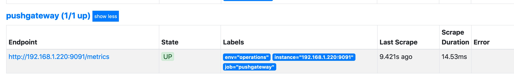

Pushgateway 代理
本章节主要讲解pushgateway使用场景介绍与相关配置知识内容
概述¶
迄今为止，我们已经可以使用Prometheus服务运行job，从各个exporter抓取数据，指标的获取方式是pull模式，也就是拉取的架构模式；但是，某些特殊情况下，会出现我们无法使用pull模式去抓取指标。 几个场景：
-
由于网络安全或者链接限制，比如AWS的Redis，因为其本身的网络安全策略，他只能在AWS的VPC内部访问，如果想外部访问，需要做一些额外的转发机制与策略，如果我们的Prometheus不在这个vpc下就会出现无法使用pull模式抓取指标。
-
目标采集点生命周期太短；例如，容器启动、执行与终止时，运行一个Prometheus Jobs，发现这个容器在很短的周期内就完成了执行，结果不能获取目标容器相关信息。
-
目标采集点没有可抓取的节点；例如，cron jobs一般不可能具有科研被抓取的正在运行的HTTP服务，就算这个采集点周期性很长。
以上三点的情况一旦出现，那我们就需要某种方式将TSDB推送给Prometheus，这就是我们要说的pushgateway，如何去处理以上的这些场景。
Pushgateway 是一个独立运行的服务，使用HTTP REST API接受Prometheus指标，位于发送指标的应用程序与Prometheus之间。pushgateway用于接收目标节点推送过来的指标数据，然后Prometheus抓取pushgateway接收到的指标数据。 因此，可以把pushgateway视为代理节点服务，同理于zabbix 的proxy节点。

官方的介绍中的已经说了，如果没有特殊情况下，不建议使用push模式的pushgateway。而是直接使用pull模式采集节点指标数据。因为一旦使用pushgateway必然会面临几个问题：
-
pushgateway存在单点问题，在监控多节点的时候，一旦pushgateway Down机，所有push数据全部丢失。
-
会失去Prometheus通过up监控指标的健康状态功能，Prometheus只能使用up检测到pushgateway的job节点健康状态。
-
pushgateway 会对推送给它的所有的监控数据持久化，也就是说，当推送节点的exporter down机状态，这时，Prometheus采集的还是最后一次推送给pushgateway的指标数据。因此，需要使用相关策略定时检测以及清理无效指标数据。
pushgateway对于使用场景的局限性，已经显而易见了，因为pushgateway是收集无法使用pull模式的场景之下，因此，pushgateway只适合放在监控生命周期比较短和短期无法采集的资源上。 这样就需要自己对需要监控的节点，写推送脚本和pushgateway的相关集成，做成计划任务推送指标到pushgateway，也就无法直接使用大部分的exporter了。
跟之前的组件一样，Go语言编写，Apache 2.0 License。¶
这里就以一个简单的例子，假设某个节点无法使用pull模式抓取指标数据，直接使用脚本把本地的node exporter数据push到 pushgateway，我之前用go写过一个脚本，可以给大家做个启蒙作用。
在Prometheus中安装pushgateway
mkdir /data/pushgateway/{conf,bin,data,logs}
wget https://github.com/prometheus/pushgateway/releases/download/v1.2.0/pushgateway-1.2.0.linux-amd64.tar.gz
tar xf pushgateway-1.2.0.linux-amd64.tar.gz
mv pushgateway-1.2.0.linux-amd64/pushgateway /data/pushgateway/bin/
pushgateway -h
# 命令参数
Flags:
-h, --help 帮助
--web.listen-address=":9091"
web/API/telemetry的监听地址
--web.telemetry-path="/metrics"
公开指标的路径。
--web.external-url= pushgateway外部可访问的URL。
--web.route-prefix="" 用于web节点的内部路由的前缀。的默认路径 --web.external-url.
--web.enable-lifecycle 通过HTTP请求启用生命周期。
--web.enable-admin-api 为管理控制操作启用API节点。
--persistence.file="" 文件以持久化度量。如果为空，则指标仅保存在内存中。
--persistence.interval=5m 写入持久性文件的最小间隔。
--push.disable-consistency-check
不要检查推送的度量标准的一致性。不要随便开启这个指标。
cat << EOF > /lib/systemd/system/pushgateway.service
[Unit]
Description=pushgateway
Documentation=https://prometheus.io/
After=network.target
[Service]
Type=simple
User=prometheus
ExecStart=/data/pushgateway/bin/pushgateway --web.listen-address=":9091" --web.external-url="http://192.168.1.220:9091"
Restart=on-failure
[Install]
WantedBy=multi-user.target
EOF
这个时候访问http://192.168.1.220:9091可以看到启动成功了，但是Metrics中是空的，因为我们还没有使用脚本推送数据，在推送数据之前，需要跟Prometheus做集成。
Prometheus配置：
- job_name: 'pushgateway'
honor_labels: true
static_configs:
- targets: ['192.168.1.220:9091']配置完成以后，重载Prometheus，这个时候访问http://192.168.1.220:19090/targets，就可以看到pushgateway的Endpoint节点信息了。

使用脚本push数据到节点，push数据的时候有2个关键指标必须存在，也就是job，instance，其他推送的指标可以自行定义，如果开启了bash auth就需要加入 -u admin:admin参数制定用户名密码，如果没有可以忽略。
PUSH_SERVER='http://192.168.1.220:9091'
NODE_IP='192.168.1.221'
PROM_JOB='test-exporter'
REGION='cn-north-1'
PROM_ENV='operations'
curl -s http://localhost:29100/metrics | curl --data-binary @- $PUSH_SERVER/metrics/job/$PROM_JOB/env/$PROM_ENV/region/$REGION/instance/$NODE_IP上面是假设192.168.1.221无法使用pull模式采集指标数据的时候，那我们就需要使用推送命令把本地的exporter数据推送给代理pushgateway，当这条命令执行以后，我们可以在pushgateway的web页面看到相关指标数据。 这个时候访问我们的pushgatewayWEB界面http://192.168.1.220:9091
然后我们继续访问Prometheus界面http://192.168.1.220:19090，使用 node_load5 来查看当前的指标状态，会发现我们推送的指标数据已经有了。

删除指标数据
PUSH_SERVER='http://192.168.1.220:9091'
NODE_IP='192.168.1.221'
PROM_JOB='test-exporter'
REGION='cn-north-1'
PROM_ENV='operations'
curl -X DELETE $PUSH_SERVER/metrics/job/$PROM_JOB/env/$PROM_ENV/region/$REGION/instance/$NODE_IPpushgateway其实就是在采集节点与Prometheus中间嫁接了一个转发器proxy，因为当时我的场景原因，当时我写了一个脚本，使用crontab用于抓取pushgateway的指标数据，然后在本地生成yml文件，基于sd_config自动发现，但是还是经常不可预知的问题，所以不到万不得已不要轻易使用pushgateway。